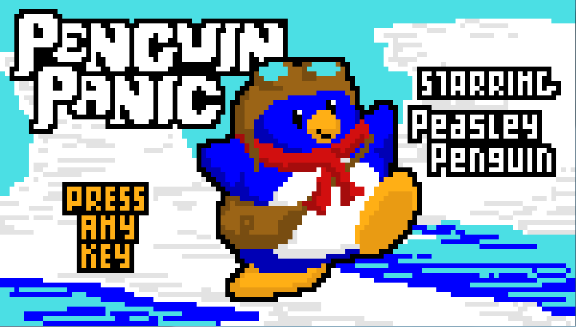
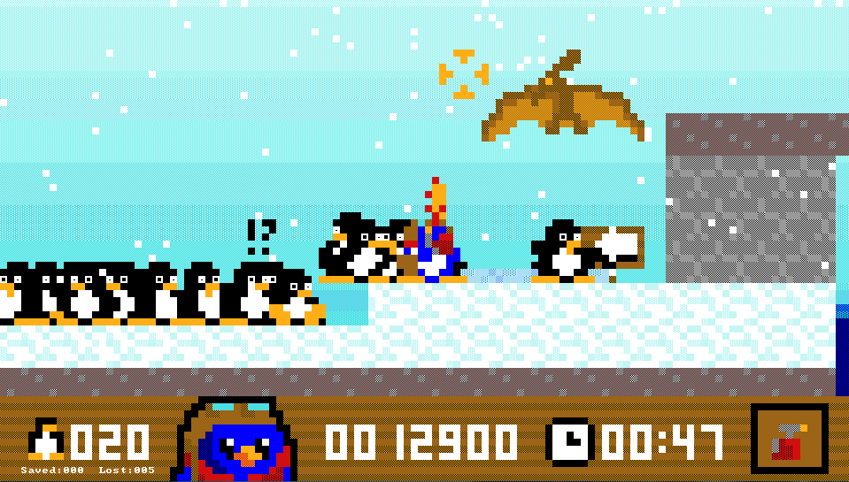

I'm a R&D Imagineer, working for Disney in San Francisco. I'm helping to create the next generation of theme parks, starting with the new Star Wars additions. To accomplish this, I'm working with members of ILM and Lucasfilm to build new tools and technology. Here are some projects, past and present.
Mekazoo is what I devoted the majority of my time to in 2014. I worked on this title with 14 (and growing) other developers at a startup indie game studio called Good Mood Creators. I was one of three programmers on the team and I was responsible for the camera system, tools for designers and artists ( in Unity and Maya ), as well as performance, debugging, character controllers, game logic, AI, and a host of other developer tasks ranging from web dev to design.
My Junior year project was a 3D, 3rd-Person boss battle barrage. In the same vein as God of War, we're trying to give the player the most visual feedback for the least amount of effort possible. On this project I was the Graphics Programmer. I was responsible for the art pipeline (FBX 2010 to engine), the skinned mesh rendering, the animation system, the sound engine, lighting, post-processing, and some smatterings of gameplay. The game is entirely from scratch in C++ with DirectX 9.0c as the graphics API the graphics engine is built upon.

SPvSZiS was my Sophomore project at DigiPen. It's a 2D top down arcade RTS. This means that there's not all the micromanagement and resource gathering that most RTS games are plagued by. On this project I was the physics, sound, and gameplay programmer as well as helping architect the engine and integrating all the subsystems. The physics engine is a 2D Newtonian impulse engine capable of handling rotation as well as constraints such as springs and rods.

Penguin Panic was my first team based game project.
It's a 2D side-scrolling puzzler in ASCII where you try to save your penguin friends from themselves.
I was responsible for a basic sprite editor as well as the UI/HUD logic for player interaction.
Click the title to download and play the game!
